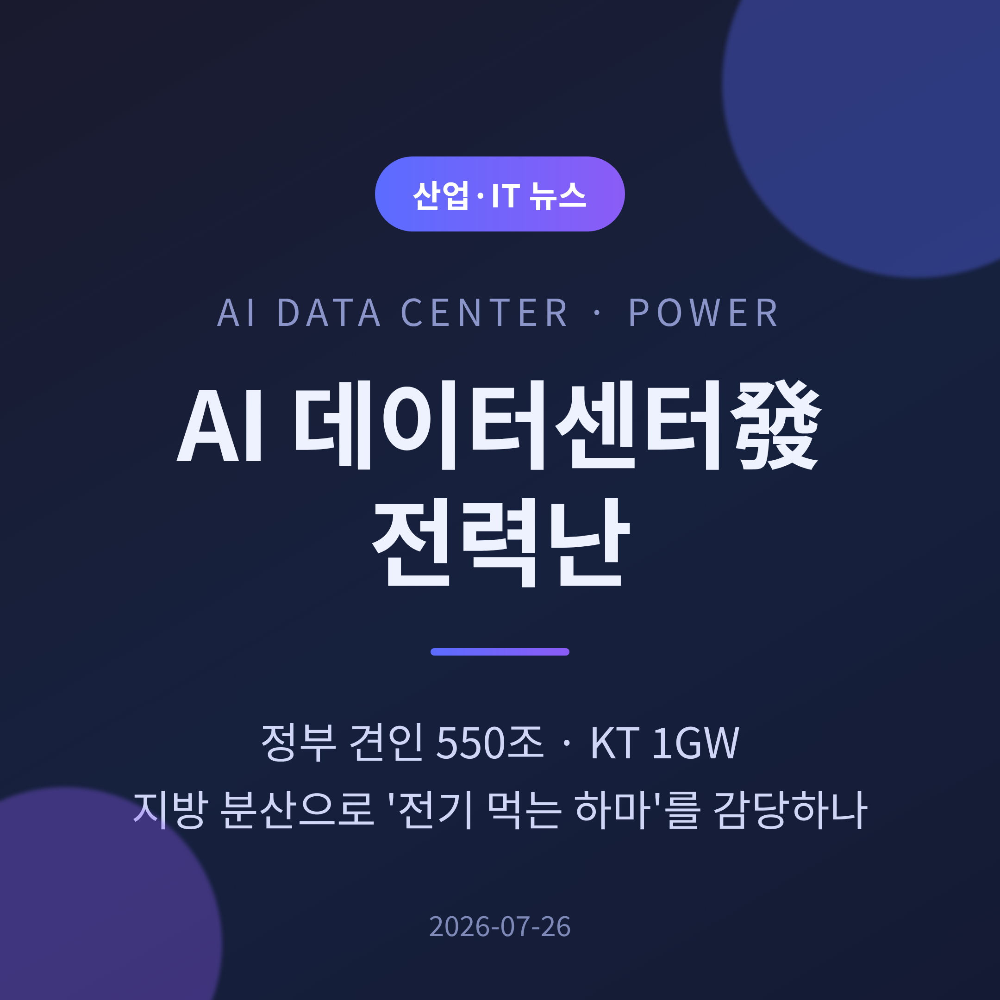
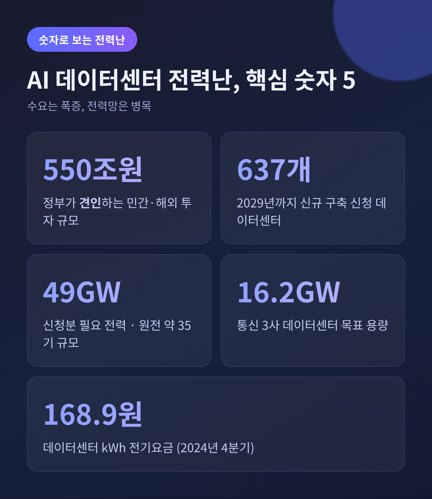
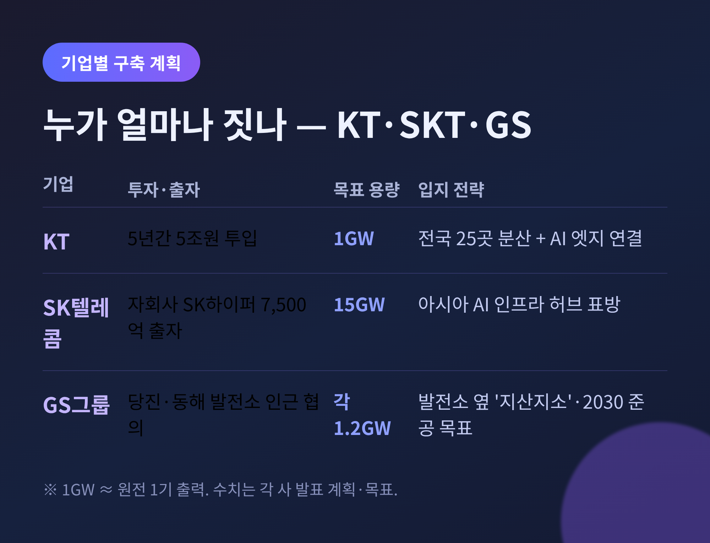
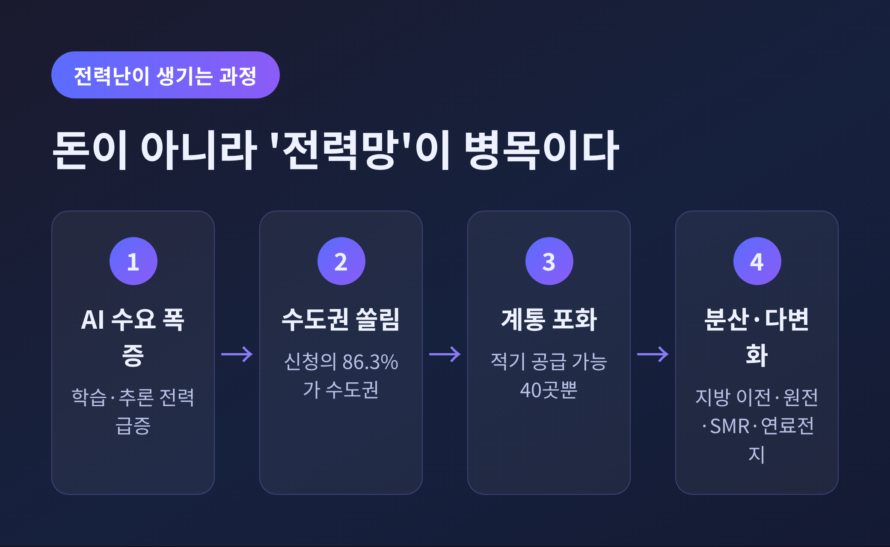
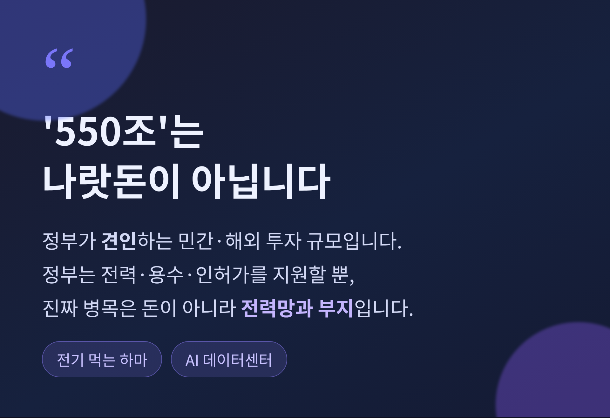
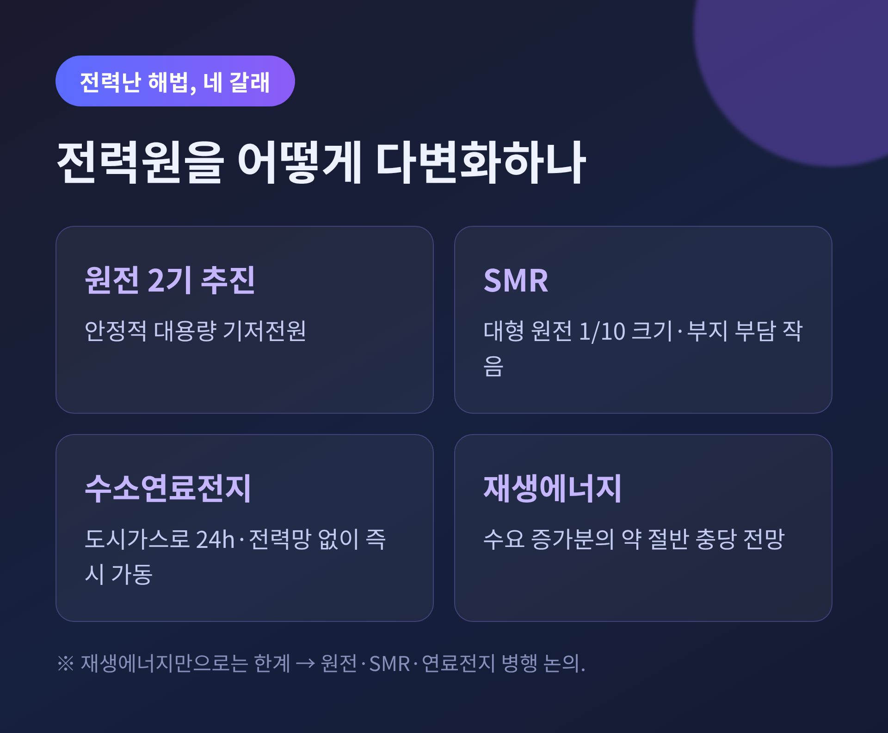

이번 글에서는 2026년 여름 산업계를 뒤흔든 'AI 데이터센터 전력난'을 정리해 보겠습니다.
한 줄로 요약하면 이렇습니다. AI가 쓰는 전기가 폭증했고, 그 전기를 감당할 데이터센터가 국가 인프라의 승부처가 됐습니다. 정부가 견인하는 550조 원 투자, KT의 1GW 구상, 그리고 지방 분산이라는 세 갈래가 지금 동시에 움직입니다.

2026년 7월, 정부와 대기업, 통신사가 약속이나 한 듯 대규모 AI 데이터센터 계획을 쏟아냈습니다.
데이터센터는 흔히 '전기 먹는 하마'로 불립니다. 24시간 쉬지 않고 전력을 빨아들이고, 뜨거워진 서버를 식히는 냉각에도 막대한 전기가 듭니다. AI 학습과 추론 수요가 폭발하면서, 이 하마를 몇 마리나 더 감당할 수 있느냐가 산업 최대의 질문이 됐습니다.
숫자부터 보면 규모가 실감 납니다. 아래 다섯 가지만 기억하셔도 이 글의 절반은 이해하신 셈입니다.

가장 먼저 바로잡을 것이 있습니다. 정부가 발표한 'AI 데이터센터 550조 원'은 정부가 직접 쓰는 예산이 아닙니다.
이 550조 원은 SK·GS·네이버 같은 기업이 정부에 제출한 투자계획과 해외 투자 유치액을 합친, 민간 중심의 투자 규모입니다. 정부의 역할은 돈을 대는 것이 아니라 전력과 용수를 공급하고, 인허가를 풀고, 클러스터 부지를 마련하는 쪽입니다.
정부는 AI 데이터센터·피지컬 AI·K-반도체를 국가 경쟁력 3대 메가프로젝트로 묶었습니다. 2028년까지 정부 몫 GPU 5만 장을 확보하고, 2026년 안에 한국형 범용 AI 챗봇을 국민에게 열겠다는 목표도 함께 내놨습니다.
정리하면 이렇습니다. 정부는 판을 깔고, 돈은 민간이 댑니다. '550조를 나랏돈으로 쓴다'는 이야기가 아니라는 점, 이 대목이 핵심입니다.
기업들의 숫자는 더 구체적입니다.
박윤영 KT 대표는 7월 6일 취임 100일에 맞춰 AI 전환(AX) 청사진을 내놨습니다. 중복을 뺀 총 투자액은 18조 원. 이 가운데 AI 데이터센터에는 5년간 5조 원을 넣어 1GW 규모를 전국 약 25곳에 나눠 짓겠다고 밝혔습니다.
한곳에 몰지 않고 25곳에 흩는다는 점이 눈에 띕니다. 중앙의 대형 데이터센터와 산업 현장 곁의 'AI 엣지'를 잇겠다는 구상입니다. 자율주행처럼 즉각 반응해야 하는 서비스에는 가까운 곳의 추론 능력이 필요하기 때문입니다.
SK텔레콤은 한술 더 떴습니다. AI 데이터센터 전담 자회사 'SK하이퍼'를 세우고 7,500억 원을 출자하기로 했습니다. 목표 용량은 무려 15GW입니다.
통신 3사를 합치면 계획 용량이 16.2GW에 이릅니다. 참고로 1GW는 원전 한 기의 출력과 비슷합니다. 16.2GW라면 올여름 국가 전체 공급능력의 약 15%, 폭염이 겹칠 때 남는 예비력의 두 배에 달하는 크기입니다.

물론 이 숫자들은 '계획'이자 '비전'입니다. 실제로 지어지고 전기가 연결되기까지는 다른 이야기입니다. 다만 목표치의 크기만으로도, 전력망이 짊어져야 할 짐이 얼마나 무거운지는 분명히 드러납니다.
수요는 넘치는데, 왜 전력난이라 부를까요. 병목이 뚜렷하기 때문입니다.
산업부 집계로는 2029년까지 신규 구축을 신청한 데이터센터가 637개입니다. 이들이 필요로 하는 전력은 약 49GW. 1.4GW급 신규 원전 서른다섯 기가 쉬지 않고 돌아가야 채울 수 있는 양입니다.
문제는 쏠림입니다. 신청의 86.3%, 그러니까 550개가 서울·경기·인천 수도권으로 몰렸습니다. 하지만 한전이 변전소와 송전망 여유를 따져 제때 전기를 댈 수 있는 곳은 단 40곳뿐입니다.
전기를 확보한 데이터센터가 오히려 '귀한 몸'이 된 배경입니다. 예전엔 부지와 건물이 자산이었습니다. 지금은 확보된 전력 그 자체가 자산입니다.
수요 곡선도 가파릅니다. 국내 데이터센터의 전력 소비는 2023년 5TWh에서 2040년 31.6TWh로, 열여덟 해 만에 여섯 배로 불어날 전망입니다. 원전 일곱 기의 연간 발전량에 맞먹습니다.

비용도 조용히 오르고 있습니다.
데이터센터에 매기는 일반용 전기요금은 2022년 1분기 kWh당 128.5원에서 2024년 4분기 168.9원으로 뛰었습니다. 전력 수요가 몰리면 구매 단가를 밀어 올립니다. 한 분석은 LNG 발전을 빼면 단가가 6.2% 더 오를 수 있다고 봤습니다.
여기서 해묵은 물음이 되살아납니다. 막대한 전기를 쓰는 데이터센터에 어떤 요금과 부담금을 매길 것인가. 그리고 그 비용이 결국 일반 가정의 전기요금으로 옮겨붙지는 않을까. 답이 쉽지 않은 대목입니다.

해법은 크게 두 방향입니다. 하나는 지방 분산, 다른 하나는 전력원 다변화입니다.
먼저 분산입니다. 정부는 비수도권에 데이터센터를 지으면 시설부담금을 깎아 주고 예비전력 요금을 일부 면제하는 인센티브를 검토하고 있습니다. 여기에 'AI 데이터센터 특별법'이 2026년 5월 7일 국회를 통과해 6월 9일 공포됐고, 2027년 3월 10일부터 시행됩니다. 인허가 지연을 풀고 전력 규제를 완화해 지방으로 유도하려는 취지입니다.
실제 움직임도 있습니다. GS그룹은 충남 당진과 강원 동해의 발전소 인근에 각각 1.2GW급 데이터센터를 짓는 방안을 협의 중입니다. 2030년 준공이 목표이고, 성사되면 국내 첫 GW급 AI 데이터센터가 됩니다. 발전소 옆에 지으면 송전망 없이 전기를 바로 쓰는 '지산지소'가 가능합니다. 다만 수도권의 낮은 지연 속도를 포기하기 어려워, 지방 이전은 아직 더디게 굴러갑니다.
다음은 전력원입니다. 재생에너지만으로는 이 수요를 감당하기 어렵다는 판단이 서면서, 정부는 신규 원전 두 기와 SMR(소형모듈원전) 한 기 건설을 추진합니다. SMR은 대형 원전의 10분의 1 크기로 부지 부담이 작고, 출력이 안정적입니다. SK이노베이션은 한국수력원자력과 손잡고 데이터센터용 SMR 생태계를 준비합니다.
수소연료전지도 대안으로 떠오릅니다. 도시가스만으로 24시간 일정한 전기를 내고, 전력망 연결을 기다리지 않고 곧바로 가동할 수 있습니다. 전력망이라는 병목을 우회하는 셈입니다.

정리하면 이렇습니다.
AI 데이터센터 전력난은 돈이 없어서 생긴 문제가 아닙니다. 550조 원이라는 투자가 견인되는데도, 그 전기를 실어 나를 전력망과 부지가 따라오지 못해 생긴 병목입니다.
— 결국 승부처는 전력을 어디서, 어떻게 확보하느냐입니다.
전기를 먼저 쥔 쪽이 AI 시대의 인프라를 쥡니다. 하마의 밥그릇을 어디에 놓을지, 우리는 지금 그 답을 고르고 있는 셈입니다.